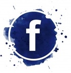
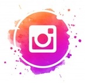

Judy Nelson
Chef de projet Marketing
jnelson@emd-management.fr

Victoria Heyberger
Chef de projet Code & Developement
vheyberger@emd-management.fr
Linda Chaou
Chef de projet Coordination
lchaou@emd-management.fr
Nais Giordano
Chef de projet technique et realisation
ngiordano@emd-management.fr
Presentation
En un scan, Di'Vin proposera des repas qui s'accordent parfaitement avec le vin choisi par notre client. Une fiche detaille le vin choisi et si le consommateur n'est pas completement satisfait de ce que Di'Vin lui recommande, il y aura egalement d'autres suggestions. A l'inverse, le client pourra imaginer un repas et Di'Vin lui suggerera les meilleurs vins en accord celui-ci.
Developpement
- Presentation produit
- Descriptif du produit
- Fonctionalites
- Image
- Presentation video
Contacts
Di'Vin application
#Di'Vin
@Di'Vin